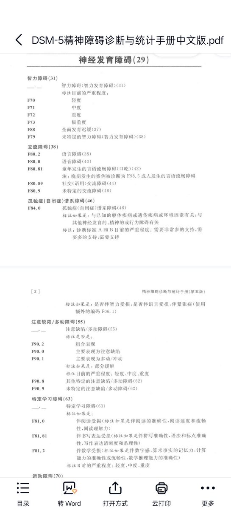
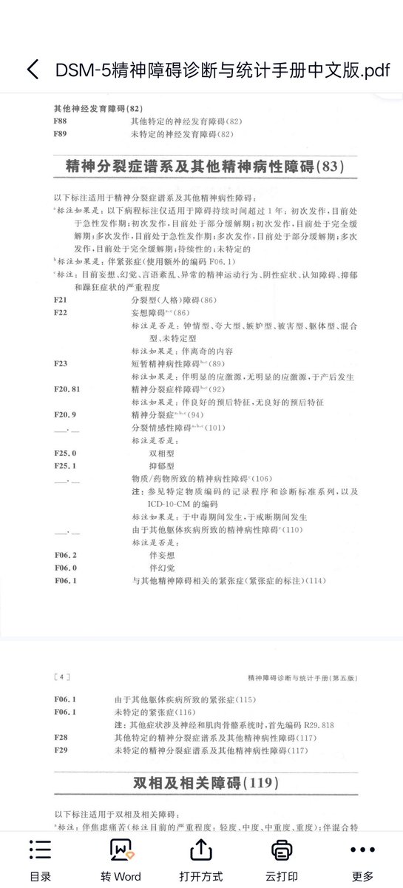
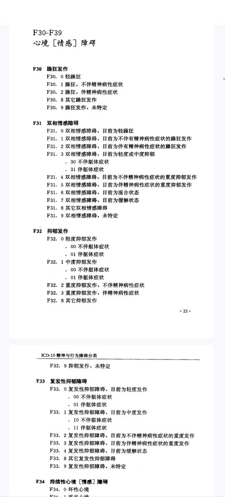

@Olebe179131 看看dsm5还有Icd10吧
ICD-10精神与行为障碍分类/范肖冬等译,-北京:人民卫生出版社，世界卫生组织原著1993ISBN 7-117-01957-3
精神障碍诊断与统计手册.案头参考书.第5版/美国精神医学学会编著；(美)张道龙等译.一北京:北京大学出版社,2014.7
ISBN 978-7-301-24282-7
按照你的说法可以找到这几种定义

ICD-10精神与行为障碍分类/范肖冬等译,-北京:人民卫生出版社，世界卫生组织原著1993ISBN 7-117-01957-3
精神障碍诊断与统计手册.案头参考书.第5版/美国精神医学学会编著；(美)张道龙等译.一北京:北京大学出版社,2014.7
ISBN 978-7-301-24282-7
按照你的说法可以找到这几种定义



你知道吗？其实医学上“精神病”其实是指精神分裂症，而且幻觉和妄想是精分独有的症状，焦虑，抑郁，双相，ADHD，这些都叫做精神障碍。有同学要说了:不对呀，老师老师我虽然是抑郁或是双相但却有幻视，幻听的症状。那这种情况下你的抑郁或者双相就叫伴有“精神病"症状的抑郁或者双相了。很神奇吧( https://t.co/0T8bybkrxj